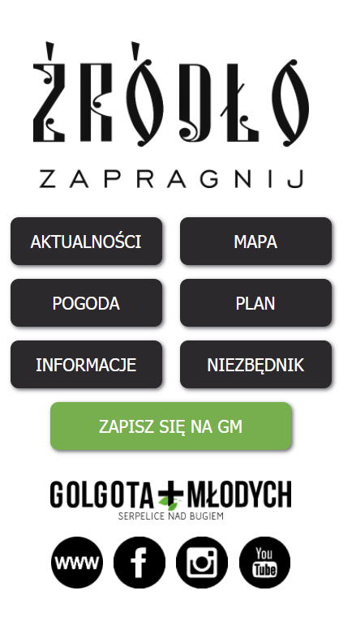
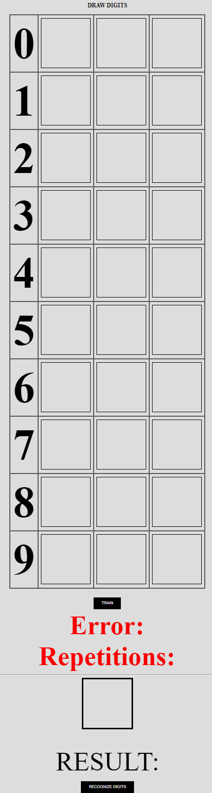
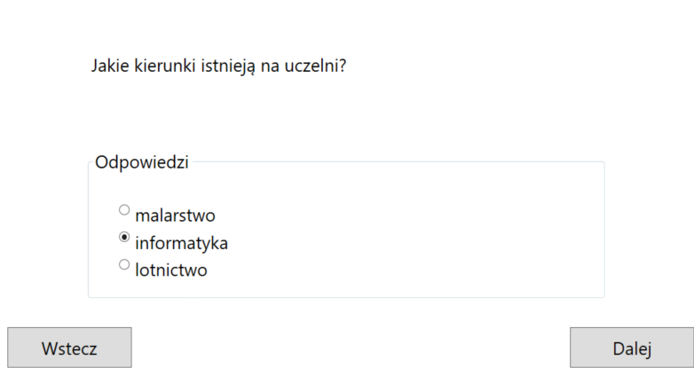
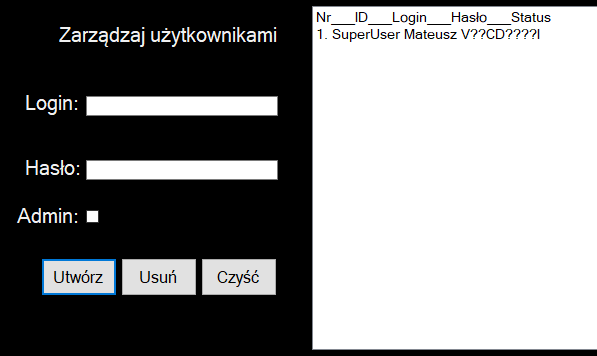
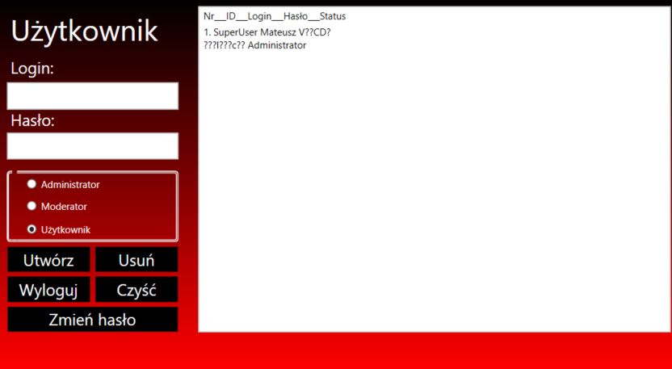

About me
I am a young and ambitious software student who has extensive experience in the field of computer science through a rich development path in the course of education, apprenticeships and internships as well as self-study.
I am during my 7 years of education in the IT sector.
I graduated from a 4-year IT technical school
and I am continuing my studies in
7-semester engineering studies at universities.
Languages
Polish (native)
English (upper-intermediate / advanced)
I use Polish as my mother tongue.
Thanks to learning English from primary school until now
and international internships, projects and student exchanges,
I am able to use English to a degree that allows me to communicate fluently and work with documentation.
Personality and hobbies
I am a very open and communicative person.
I adapt very quickly to a new environment and introduce a nice atmosphere.
If I don't know something, I am not ashamed, I will ask and I will catch up ASAP.
I respects everyone and expects respect. I love my family and loved ones.
I'm interested in automotive and technology,
I like playing the guitar and singing, riding a motorcycle and traveling.
I prefer team sports and team games, I'm not a solo type.
As a typical IT guy, I like to play video games sometimes.
Personal Info
Phone:
hidden in public placeEmail:
moczarscy@gmail.comLinkedIn:
linkedin.com/in/moczarskimateuszGitHub:
github.com/MoczarskiAddress:
hidden in public placeSkills
HTML CSS JavaScript
SQL PL/SQL
Node.js C# PHP
Systems
Networks
Graphic
My education road school
Lomza State University of Applied Sciences
Software Engineering in PolandSakarya University
Software Engineering in TurkeyUniversity of Ostrava
Software Engineering in Czech RepublicTechnical School of Computer Science
IT TechnicanIT experience computer
IT Administrator - Health Care Center "MEDICUS" | Poland
- check Administration (Windows)
- check Creating the LAN (TP-Link)
Research Specialist - Atmoterm S.A. | Poland
- check Entering data into the database
IT Assistant - College in Vilnius | Lithuania
- check Resource administration in SCCM
- check Security administration (SAFETICA)
- check Web development (HTML, CSS, JS, Flexbox)
- check Full stack web development (HTML, CSS, JS, Node.JS, Express.JS, Passport.JS, RESTful API, NPM, GIT, MySQL)
Web Designer - TRANSAGRO | Poland
- check Graphic design (GIMP, Corel)
- check Web design (HTML, CSS, JS, Wordpress)
- check Administration (Windows)
IT Architect - F+U Sachsen GGmbH | Germany
- check Administration (Windows Serwer)
- check Network infrastructure planning in an office building
- check Creating the LAN (Cisco)
- check Web development (HTML, CSS, JS, PHP)
My samples
Simple web app for institution - JS
School project to intelligent recognizing numbers - JS
Quiz about my polish university - C#
Logging form with database - C#
Database manager - C#
